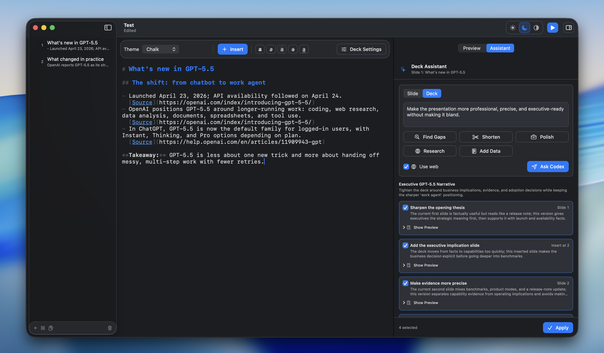
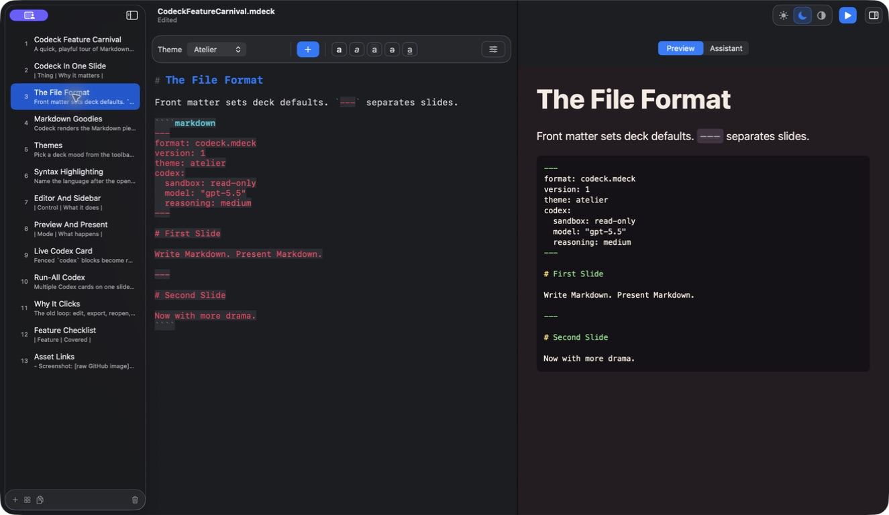
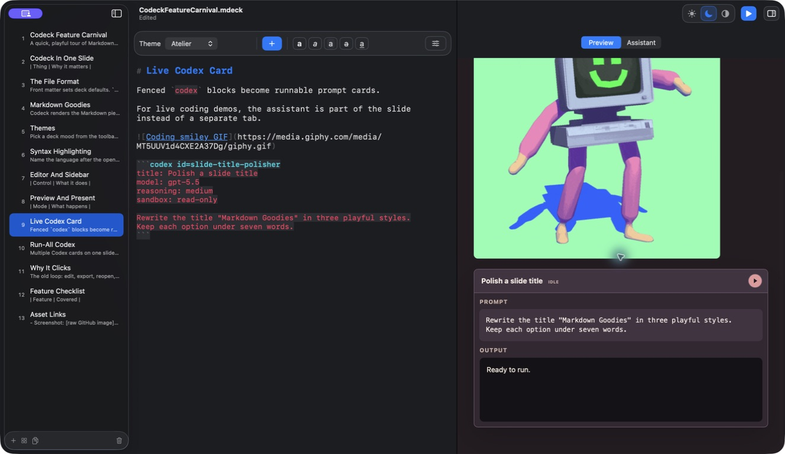
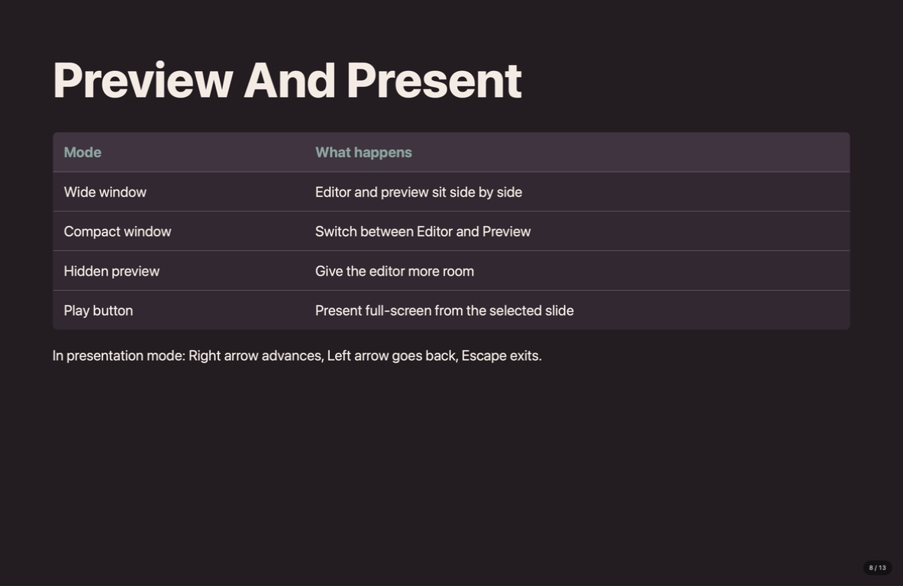

Open source · Native macOS
Markdown decks thatrun Codex live.

Write a readable Markdown deck, run Codex directly on the slide, shape the story with reviewable AI edits, and go full screen without breaking your flow.
macOS 14+ · Live AI requires Codex CLI and an active login.
- macOS 14+
- Native document app
- .mdeck
- Readable plain text
- MIT
- Open-source project
One native loop for
- AI training
- Live demos
- Executive briefings
- Hands-on workshops
Inside Codeck
One deck. Three real moments.
Write the source, inspect a runnable Codex card, then present the same file. These
are authentic captures from one working .mdeck deck.
01 · Write
Markdown on one side. The slide on the other.
Edit readable source and watch the themed preview update beside it—no export and no hidden format.


02 · Run
Codex is part of the slide.
A fenced codex block becomes a runnable card with its prompt, model
settings, and response area kept beside the source.

03 · Present
The working deck is the final deck.
Launch presentation mode from the selected slide and take the same file straight to the room.
Live Codex
The prompt belongs on the slide.
A fenced codex block becomes a runnable card with its own model,
reasoning, and sandbox settings. The answer streams back into the presentation as Markdown.
- Run one session or every card on the slide
- Use stable IDs for reliable output tracking
- Render lists, tables, links, and code in the result
```codex id=first-demo
title: Make it testable
reasoning: high
sandbox: read-only
Give me three observable checks
for this live demo.
```Play the sample to watch a response arrive.
Deck Assistant
Review every AI edit before it lands.
Ask for a tighter slide or a stronger whole-deck narrative. Codeck returns concrete insertions and replacements, so you choose what earns a place in the source.
Presentation themes
Same source. A different room.
Change the deck's look without rewriting slide content. Try the five themes below.
The .mdeck format
Simple enough to own.
Your deck is Markdown with small, explicit YAML settings. Open it in Codeck, inspect it in any editor, review it in Git, or hand it to an MCP-capable agent.
Current builds are ad-hoc signed but not notarized, so macOS may show an unidentified-developer warning on first launch.
---
format: codeck.mdeck
version: 1
theme: studio
codex:
sandbox: read-only
reasoning: medium
---
# First slide
Teach the workflow, then run it live.Your next deck
Make the presentation a working session.
Bring the source, the live demo, and the final story into one native Mac workspace.
Open source · MIT licensed · macOS 14+